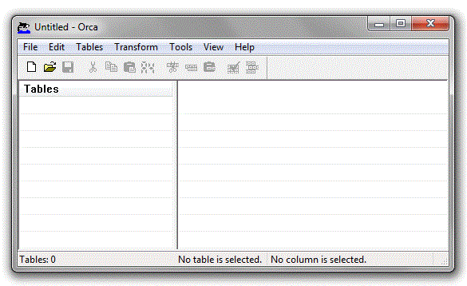
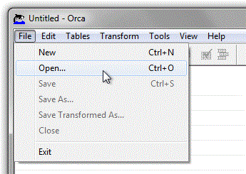
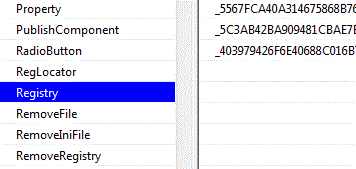
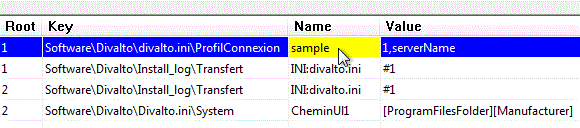
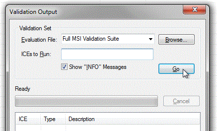
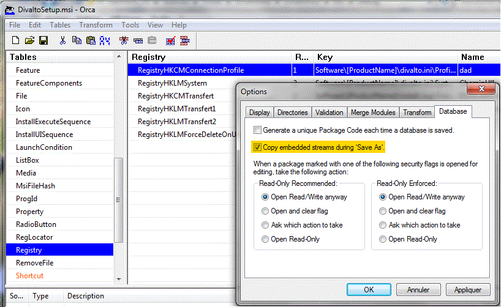

Avant de distribuer le fichier d'installation du client léger, il est possible de le personnaliser, à l’aide du logiciel Microsoft Orca.
La personnalisation va permettre de pré-paramétrer l'installation, afin de rendre le poste client immédiatement utilisable, en proposant un profil de connexion par défaut configuré de manière à autoriser une connexion immédiate au serveur d'applications.
Mais ATTENTION : La personnalisation du fichier .msi annule la signature numérique de l'installateur. La signature confirme l’identité de l’auteur du code et garantit que ce code n’a pas été modifié ou corrompu depuis qu’il a été signé. Elle assure en particulier que les logiciels Antivirus ne perturbent pas le lancement de l'installation.
Lancez le choix Gestion des Profils de connexion en client léger du menu Harmony et saisissez le profil de connexion choisi pour être configuré dans Orca.
Le logiciel Orca se présente ainsi :

Par « File > Open… », ouvrez le fichier "DivaltoSetup.msi" à modifier.
Ce fichier est livré sur le CD Divalto (après avoir installé le produit "Harmony Power Foundation", vous le trouverez dans le répertoire x:\Divalto\Internet\LCWebService).

La colonne de gauche présente la liste des tables composant le fichier "DivaltoSetup.msi". Dans cette liste, il vous faut trouver la table "Registry" :

La partie droite détaille les champs de la table et leur valeur pour chaque entrée. Trouvez l’entrée "Sample" dans la colonne "Name" :

Remplacez le nom "Sample" par le nom de votre profil de connexion par défaut.
Attention : Un profil nommé "Sample" est ignoré dans la boîte de connexion (il n’apparaîtrait donc pas dans la liste des profils). Il est donc impératif de le renommer.
Lancez RegEdit, placez-vous sur le chapitre HKEY_CURRENT_USER\Software\Divalto\divalto.ini\ProfilConnexion et copiez la chaîne (telle quelle) contenue par la clé identifiée par le nom du profil choisi. Par exemple, si le profil a été nommé profil_defaut :
Dans la colonne "Value", coller la chaîne précédemment copiée à la place de la valeur "1,serverName".
A titre indicatif, cette valeur est organisée comme suit (tout attaché, les champs sont séparés entre eux par une virgule, les champs entre crochets sont facultatifs) :
Pour une connexion en mode Socket (*) :
1,nom_du_serveur,[adresse_ip],[port],[autres_paramètres],[type_utilisateur],[option_identification],[mot_de_passe]
Le "1" indique une connexion en mode Socket.
nom_du_serveur est le nom NETBIOS du serveur d'applications sur le réseau.
adresse_ip est son adresse IP (en général, il n'est pas utile de la préciser car elle est automatiquement détectée).
port est le numéro de port à utiliser (1246 par défaut).
autres_paramètres permet de spécifier des paramètres de connexion complémentaires.
type_utilisateur spécifie si l'utilisateur a ou non le droit d'accès total à la boîte des options de connexion avancées.
option_identification spécifie la stratégie de sécurité à employer pour se connecter à Divalto.
mot_de_passe est le mot de passe (crypté) à utiliser pour obtenir un accès total à la boîte des options de connexion avancées.
Exemple : 1,ServeurApplications
(*) Nécessite l’ouverture d’un port de communication TCP/IP entre le client et le serveur.
Pour une connexion en mode Service Web (*) :
2,url_du_serveur,[autres_paramètres],[type_utilisateur],[option_identification],[mot_de_passe]
Le 2 indique une connexion en mode Service Web.
url_du_serveur est l'url d'accès au service Web sur le serveur d'applications (**).
autres_paramètres permet de spécifier des paramètres de connexion complémentaires.
type_utilisateur spécifie si l'utilisateur a ou non le droit d'accès total à la boîte des options de connexion avancées.
option_identification spécifie la stratégie de sécurité à employer pour se connecter à Divalto.
mot_de_passe est le mot de passe (crypté) à utiliser pour obtenir un accès total à la boîte des options de connexion avancées.
Exemple : 2,http://divalto.societe.fr/Erp/DHTerminalServer.asmx
(*) Nécessite d'installer le service IIS de Microsoft sur le serveur d'applications.
(**) Un modèle ("DHTerminalServer.asmx") de la page asmx à spécifier est fourni sur le CD Divalto (après avoir installé le produit "Harmony Power Foundation", vous la trouverez dans le répertoire x:\Divalto\Internet\LCWebService). Il est conseillé de faire pointer le répertoire virtuel IIS (Erp dans l'exemple) sur ce répertoire : il peut être changé mais dans ce cas, il ne faudra pas oublier de reprendre le modèle livré par Divalto en cas de mise à jour dans une version future d'Harmony.
Après avoir modifié la valeur, validez le fichier .msi par le choix « Tools > Validate… » (Ctrl+L).
Dans la boîte de dialogue qui s’ouvre, cliquez sur le bouton Go :

Une fois la validation terminée, cliquez simplement sur "close" pour fermer la boîte de dialogue et refermez Orca en enregistrant le .msi si une boîte de dialogue vous le demande.
L’exécutable d’installation du client léger inclut maintenant les paramètres de connexion que vous avez choisis et le profil créé sera proposé à l’utilisateur dans sa boîte de connexion avancée au premier lancement du client léger. Tant que l'utilisateur ne change pas de profil, ce profil continuera à être proposé lors de ses connexions ultérieures.
Attention en cas d'utilisation du choix du menu "Save As..." :
Le fichier résultat renommé ne sera pas correct si vous n'avez pas au préalable activé l'option "Copy Embedded streams during 'Save As'" :
